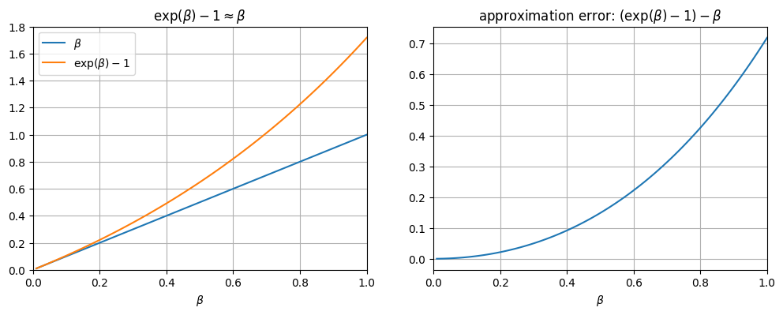

対数変換#
目的変数や説明変数を対数変換すると、推定結果の解釈が変わる
モデル |
係数の解釈 |
|---|---|
\(Y = \beta_0 + \beta_1 X\) |
「\(X\)が1単位増加すると，\(Y\)が\(\beta_1\)単位増加する」 |
\(Y = \beta_0 + \beta_1 \ln(X)\) |
「\(X\)が1%増加すると，\(Y\)が\(\beta_1 / 100\)単位増加する」 |
\(\ln(Y) = \beta_0 + \beta_1 X\) |
「\(X\)が1単位増加すると，\(Y\)が\((\beta_1 \times 100)\)%増加する」 |
\(\ln(Y) = \beta_0 + \beta_1 \ln(X)\) |
「\(X\)が1%増加すると，\(Y\)が\(\beta_1\)%増加する」 |
次のようなデータを使って実際にモデルをあてはめつつ確認していく
Show code cell source
import numpy as np
import pandas as pd
import matplotlib.pyplot as plt
import seaborn as sns
import statsmodels.api as sm
import statsmodels.formula.api as smf
# 真のデータ生成過程
n = 100
np.random.seed(0)
x = np.random.uniform(1, 100, size=n)
x = np.sort(x)
e = np.random.normal(loc=0, scale=15, size=n)
beta0 = 100
beta1 = 3
y = beta0 + beta1 * x + e
df = pd.DataFrame({"y": y, "x": x})
plt.scatter(x, y)
plt.xlabel("x")
plt.ylabel("y")
plt.title(f"y = {beta0} + {beta1} * x + e")
plt.show()
/tmp/ipykernel_1932/2148610587.py:2: DeprecationWarning:
Pyarrow will become a required dependency of pandas in the next major release of pandas (pandas 3.0),
(to allow more performant data types, such as the Arrow string type, and better interoperability with other libraries)
but was not found to be installed on your system.
If this would cause problems for you,
please provide us feedback at https://github.com/pandas-dev/pandas/issues/54466
import pandas as pd

(1) \(Y = \beta_0 + \beta_1 X\)#
Xを1単位増加させたモデルとそうでないモデルで差分をとってみると
であるため、「\(X\)が1単位増加すると、\(Y\)が\(\beta_1\)単位増加する」という解釈になる
Show code cell source
model = smf.ols('y ~ x', data=df).fit()
beta = model.params.to_list()
y_pred = model.predict(df[["x"]])
fig, ax = plt.subplots()
ax.scatter(x, y)
ax.set(xlabel="x", ylabel="y", title="y = β0 + β1 x")
ax.plot(x, y_pred, label=f"estimated model: y = {beta[0]:.1f} + {beta[1]:.2f} x")
ax.legend()
fig.show()

(2) \(Y = \beta_0 + \beta_1 \ln(X)\)#
\(\ln(1.01) \approx 0.01\)なので
「\(X\)が1%増加すると、\(Y\)が\(\beta_1 / 100\)単位増加する」となる
\(\ln(1.01) \approx 0.01\)について
\(\ln(1.01) \approx 0.01\)はテイラー近似から導出される。まずテイラー近似について述べる
\(f(x)=\ln(x+1)\)とおくと、その\(n\)次の微分は
となる。もし\(x=0\)なら
となる。
これを\(x=0\)でのテイラー展開（つまりマクローリン展開）
にあてはめると、
となる。これは\(x\)が極めて小さな値（\(x \approx 0\)）であれば\(x^2\)や\(x^3\)といった値は非常に小さくなるため、\(\ln(1+x) \approx x\)となる。
よって\(\ln( 1 + 0.01) \approx 0.01\)となる
数値計算的に確かめると、以下のようになる
log: 0.0099503
approx 1: 0.0100000
approx 2: 0.0099500
approx 3: 0.0099503
Show code cell source
model = smf.ols('y ~ np.log(x)', data=df).fit()
beta = model.params.to_list()
y_pred = model.predict(df[["x"]])
fig, axes = plt.subplots(ncols=2, figsize=[12, 4])
axes[0].scatter(x, y)
axes[0].set(xlabel="x", ylabel="y", title="y = β0 + β1 log(x)")
axes[0].plot(x, y_pred, label=f"estimated model: y = {beta[0]:.1f} + {beta[1]:.3g} log(x)")
axes[0].legend()
axes[1].scatter(np.log(x), y)
axes[1].set(xlabel="log(x)", ylabel="y", title="y = β0 + β1 log(x)")
axes[1].plot(np.log(x), y_pred, label=f"estimated model: y = {beta[0]:.1f} + {beta[1]:.3g} log(x)")
axes[1].legend()
fig.show()
np.log(1.01)
0.009950330853168092
x0 = 50
y1 = beta[0] + beta[1] * np.log(x0)
y2 = beta[0] + beta[1] * np.log(x0 * 1.01)
print(f"xが1%増加したときのyの増分 = {y2 - y1:.3f}")
xが1%増加したときのyの増分 = 0.825
\(\ln(1.01) \approx 0.01\)の近似誤差が多少あるが、おおむね「\(X\)が1%増加すると、\(Y\)が\(\beta_1 / 100\)単位増加する」という関係になる。
(3) \(\ln(Y) = \beta_0 + \beta_1 X\)#
\(X\)を1単位増やしたときの\(Y\)の変化率は
\(\beta_1\)が十分に小さいとき、\(\exp(\beta_1) - 1 \approx \beta_1\)
そのため\(X\)が1単位増えると、\(Y\)は\(\exp(\beta_1) - 1 \approx \beta_1\)％増える
「\(X\)が1単位増加すると、\(Y\)が\((\beta_1 \times 100)\)%増加する」
Note
「十分に小さいとき」とは？
下図のように、\(x\)が大きくなるに連れて誤差は増える。

\(x\)が\(0.2\)であれば近似誤差は\(0.02\)程度となる。
\(x\)が\(0.4\)であれば近似誤差は\(0.1\)程度となる。
大まかな目安としては、推定量\(\beta\)が0.2を超えるくらいになると近似誤差に気をつけたほうがよさそう
Note
別の式変形のしかた
差し引きすれば
ここで\(\log_a(A) - \log_a(B) = \log_a(\frac{A}{B})\)より
両辺を指数関数に入れると
両辺から1を引けば
\(\exp(x) - 1 \approx x\)について
\(f(x)=\exp(x)\)とおくと、その\(n\)次の微分は
となる。もし\(x=0\)なら
となる。
これを\(x=0\)でのテイラー展開（つまりマクローリン展開）
にあてはめると、
となる。
\(x\)が極めて小さな値（\(x \approx 0\)）であれば\(x^2\)や\(x^3\)といった値は非常に小さくなるため、\(\exp(x) \approx 1 + x\)となる。
よって\(\exp(x) - 1 \approx x\)となる
数値計算的に確かめると、以下のようになる
x : 0.1
exp(x) - 1: 0.1051709
マクローリン近似
もとの値 exp(x) = 1.1051709
1次近似 1 + x = 1.1000000
2次近似 1 + x + (x^2 / 2!) = 1.1050000
Show code cell source
model = smf.ols('np.log(y) ~ x', data=df).fit()
beta = model.params.to_list()
y_pred = model.predict(df[["x"]])
fig, axes = plt.subplots(ncols=2, figsize=[12, 4])
axes[0].scatter(x, y)
axes[0].set(xlabel="x", ylabel="y, exp(y_hat)", title="y = β0 + β1 x")
axes[0].plot(x, np.exp(y_pred), label=f"estimated model: log(y) = {beta[0]:.1f} + {beta[1]:.2g} x")
axes[0].legend()
axes[1].scatter(x, np.log(y))
axes[1].set(xlabel="x", ylabel="log(y), y_hat", title="log(y) = β0 + β1 x")
axes[1].plot(x, y_pred, label=f"estimated model: log(y) = {beta[0]:.1f} + {beta[1]:.2g} x")
axes[1].legend()
fig.show()
x0 = 50
y1 = beta[0] + beta[1] * x0
y2 = beta[0] + beta[1] * (x0 + 1)
print(f"xが1単位増加したときのyの増分 = {y2 - y1:.3f}")
xが1単位増加したときのyの増分 = 0.013
(4) \(\ln(Y) = \beta_0 + \beta_1 \ln(X)\)#
「\(X\)が1%増加すると、\(Y\)が\(\beta_1\)%増加する」
Show code cell source
model = smf.ols('np.log(y) ~ np.log(x)', data=df).fit()
beta = model.params.to_list()
y_pred = model.predict(df[["x"]])
fig, axes = plt.subplots(ncols=2, figsize=[12, 4])
axes[0].scatter(x, y)
axes[0].set(xlabel="x", ylabel="y, exp(y_hat)", title="log(y) = β0 + β1 log(x)")
axes[0].plot(x, np.exp(y_pred), label=f"estimated model: log(y) = {beta[0]:.1f} + {beta[1]:.2g} log(x)")
axes[0].legend()
axes[1].scatter(np.log(x), np.log(y))
axes[1].set(xlabel="log(x)", ylabel="log(y), y_hat", title="log(y) = β0 + β1 log(x)")
axes[1].plot(np.log(x), y_pred, label=f"estimated model: log(y) = {beta[0]:.1f} + {beta[1]:.2g} log(x)")
axes[1].legend()
fig.show()
x0 = 50
y1 = beta[0] + beta[1] * np.log(x0)
y2 = beta[0] + beta[1] * np.log(x0 + 1)
print(f"xが1%増加したときのyの増分 = {y2 - y1:.3f}")
xが1%増加したときのyの増分 = 0.008
y1 = model.predict(pd.DataFrame([{"x": x0}])).to_numpy()[0]
y2 = model.predict(pd.DataFrame([{"x": x0 + 1}])).to_numpy()[0]
print(f"xが1単位増加したときのyの増分 = {y2 - y1:.3f}")
xが1単位増加したときのyの増分 = 0.008
別データ例：賃金データ#
RのAERパッケージに含まれるCPS1985という1985年の賃金のデータを例に取る。教育年数が1年ふえるごとに賃金は何%増えるのだろうか。
Show code cell source
import statsmodels.api as sm
cps = sm.datasets.get_rdataset("CPS1985", "AER").data.assign(log_wage = np.log(cps["wage"]))
fig, axes = plt.subplots(ncols=2, figsize=[8, 4])
reg = smf.ols('wage ~ education', data=cps).fit()
axes[0].scatter(cps["education"], cps["wage"], color="black", alpha=0.5
)axes[0].set(xlabel="education", ylabel="wage")
axes[0].plot(cps["education"], reg.predict(cps),
label=f"wage = {reg.params['Intercept']:.3f} + {reg.params['education']:.3f} education")
axes[0].legend()
reg = smf.ols('log_wage ~ education', data=cps).fit()
axes[1].scatter(cps["education"], cps["log_wage"], color="black", alpha=0.5)
axes[1].set(xlabel="education", ylabel="log_wage")
axes[1].plot(cps["education"], reg.predict(cps),
label=f"log_wage = {reg.params['Intercept']:.3f} + {reg.params['education']:.3f} education")
axes[1].legend()
Cell In[12], line 8
)axes[0].set(xlabel="education", ylabel="wage")
^
SyntaxError: invalid syntax
モデルに投入するeducationの値が1上がるごとに、概ね0.079 = 7.9%程度上がる
reg = smf.ols('log_wage ~ education', data=cps).fit()
test = pd.DataFrame({"education": range(21)})
test["log_wage_pred"] = reg.predict(test) # 予測値を入れる
test["wage_pred"] = np.exp(test["log_wage_pred"])
test["wage_pred_diff"] = test["wage_pred"].diff()
test["wage_pred_change"] = test["wage_pred"].pct_change()
test["log_wage_pred_change"] = test["log_wage_pred"].pct_change()
test.head(10)
| education | log_wage_pred | wage_pred | wage_pred_diff | wage_pred_change | log_wage_pred_change | |
|---|---|---|---|---|---|---|
| 0 | 0 | 1.059890 | 2.886053 | NaN | NaN | NaN |
| 1 | 1 | 1.136648 | 3.116306 | 0.230253 | 0.079781 | 0.072421 |
| 2 | 2 | 1.213407 | 3.364929 | 0.248623 | 0.079781 | 0.067531 |
| 3 | 3 | 1.290166 | 3.633388 | 0.268459 | 0.079781 | 0.063259 |
| 4 | 4 | 1.366924 | 3.923265 | 0.289877 | 0.079781 | 0.059495 |
| 5 | 5 | 1.443683 | 4.236268 | 0.313003 | 0.079781 | 0.056154 |
| 6 | 6 | 1.520441 | 4.574243 | 0.337975 | 0.079781 | 0.053169 |
| 7 | 7 | 1.597200 | 4.939182 | 0.364939 | 0.079781 | 0.050484 |
| 8 | 8 | 1.673958 | 5.333237 | 0.394055 | 0.079781 | 0.048058 |
| 9 | 9 | 1.750717 | 5.758730 | 0.425493 | 0.079781 | 0.045855 |